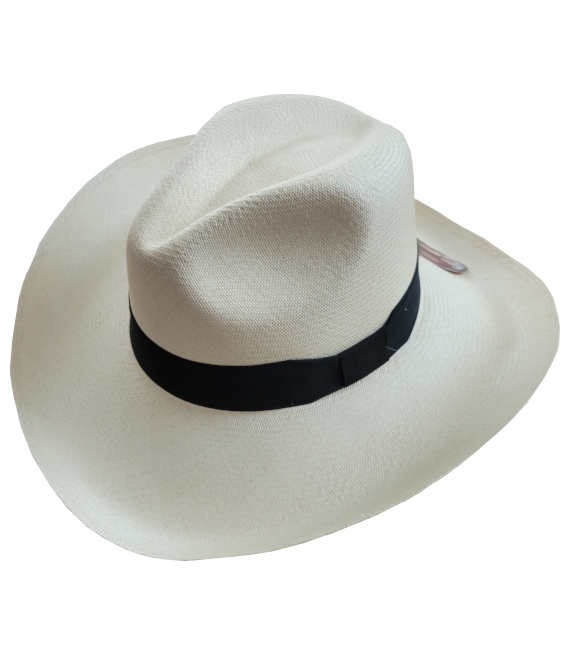

Sombrero Aguadeño
COP 130000
COP 130000
Los sombreros tradicionales aguadeños, paisas o antioqueños son una expresión auténtica de la cultura y la tradición colombiana. Originarios de la pintoresca región de Aguadas, en el corazón de Caldas, estos sombreros tejidos a mano son verdaderas obras maestras de la artesanía. Cada sombrero Aguadeño es una pieza única, cuidadosamente confeccionada por hábiles artesanos que han heredado sus conocimientos a lo largo de generaciones